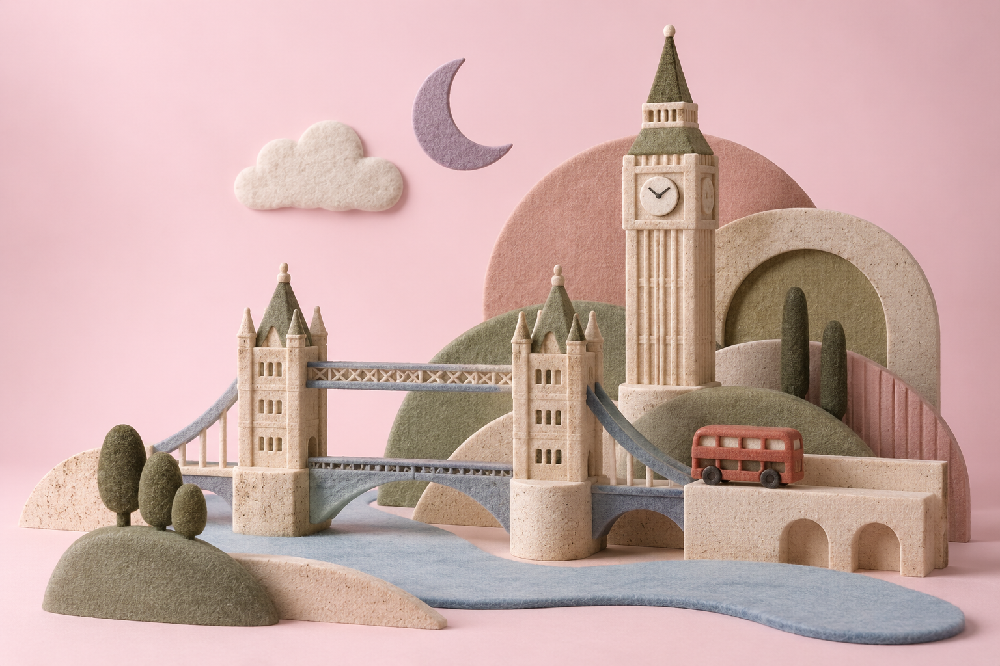

15–19 PAŹDZIERNIKA 2026 · LOTY POTWIERDZONE
W dobrym
towarzystwie.
Trochę muzyki, trochę miasta.
I dużo czasu razem.
Mieszko + Kostek w drodze. Marcin na miejscu.
Do tego Karolina i może Adam. Fajnie być razem.

Otwieramy nasz londyński notes…